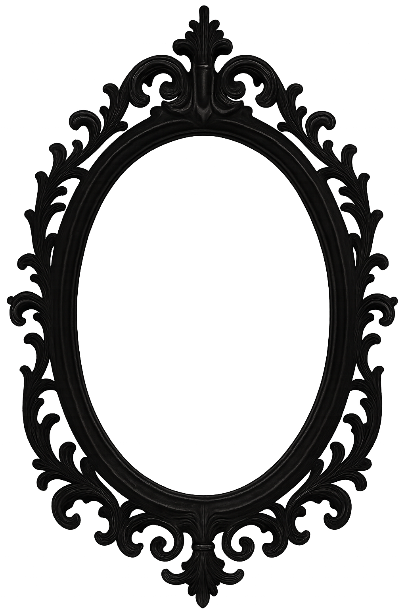
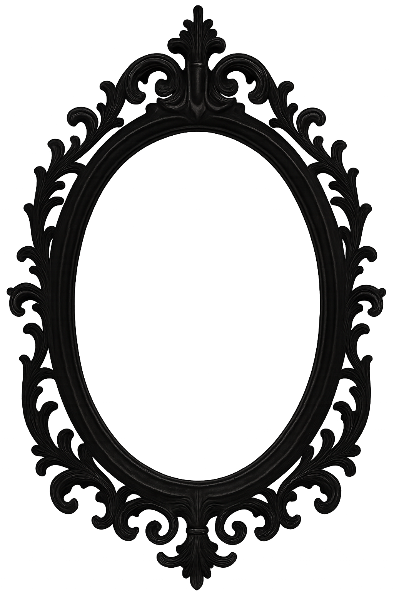

𝔖𝔬𝔟𝔯𝔢
About
 

Sou Thaisi Gomes, ilustradora com formação em Design Gráfico e Digital.
Minhas criações são inspiradas pelo universo Gótico, com influências marcantes do vampirismo, da elegância
sombria e melancólica da Era Vitoriana e pelo fascínio ao horror
clássico.
Trabalho com ilustrações digitais de personagens em diversos formatos — desde conteúdos para redes sociais,
e-books e capas literárias até brindes exclusivos para livros físicos. Também produzo artes para impressão,
ideais para decoração em quadros, pôsteres e outros formatos.
I'm Thaisi Gomes, a illustrator with a degree in Graphic and Digital Design.
My creations are inspired by the Gothic universe, with strong influences from vampirism, the dark and
melancholic elegance of the Victorian Era, and the fascination with classic horror.
I work with digital illustrations of characters in various formats — from content for social networks,
e-books, and literary covers to exclusive gifts for physical books. I also produce art for printing, ideal
for decorating frames, posters, and other formats.
ℭ𝔬𝔫𝔱𝔞𝔱𝔬
Contact
Comissões, parcerias ou curiosidades obscuras — Entre em contato:
𝔓𝔬𝔯𝔱𝔣𝔬𝔩𝔦𝔬